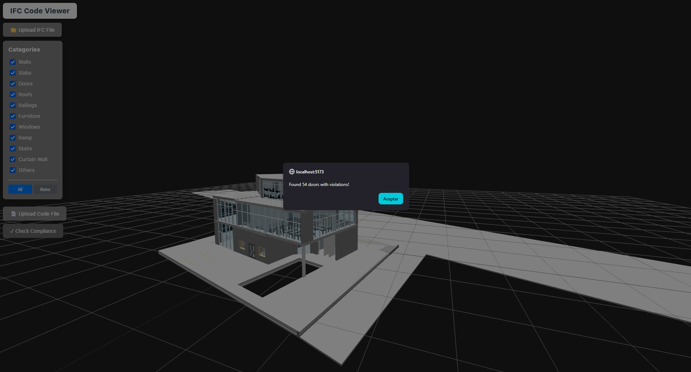
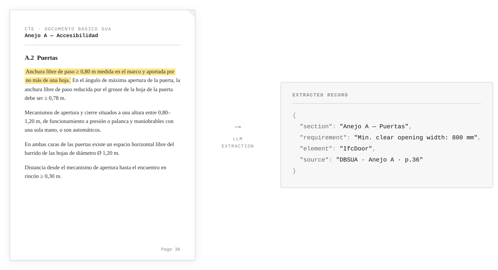
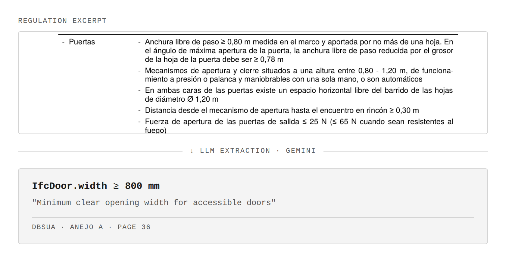
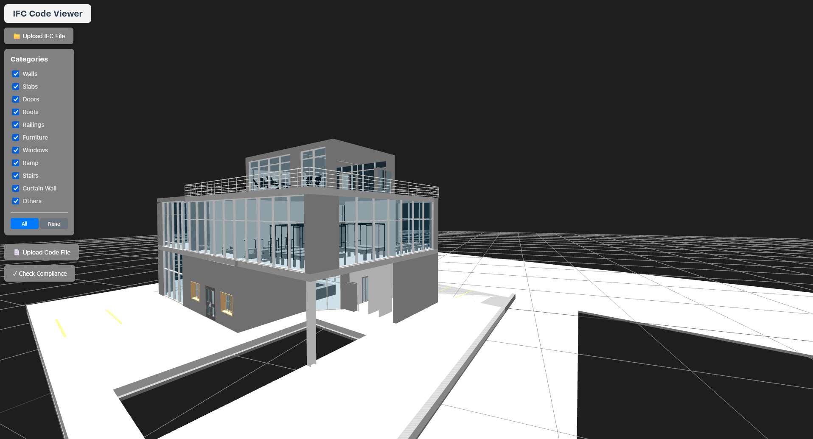
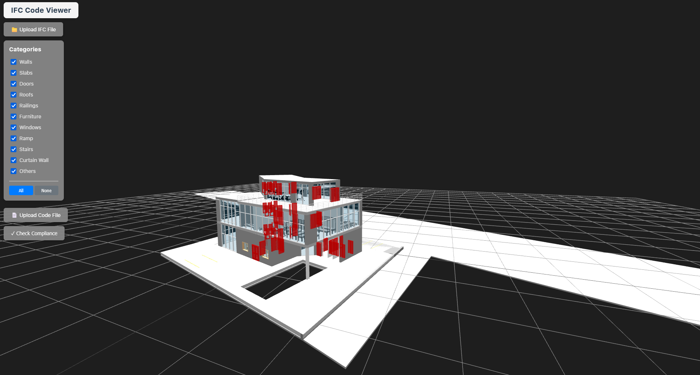

APPLIED AI · COMPUTATIONAL GEOMETRY · BIM
AI-assisted translation of building regulations into computable rules for models in IFC format
THREE.JS · LLM PIPELINE (GEMINI) · RULE ENGINE · BIM
A research prototype investigating how natural-language building regulations can be translated into computable geometric constraints and evaluated against BIM (Building Information Management) models using IFC (Industry Foundation Classes), an open data standard for representing the geometry, properties and relationships of building elements.
The system connects building-code documents with BIM models. A browser-based viewer built with Three.js and web-ifc loads IFC models client-side, while a separate LLM pipeline reads building-code PDFs, extracts the clauses relevant to a given building element, and translates them into structured rules mapped onto the IFC schema.
For the current prototype, the scope is narrowed to door regulations under the Spanish accessibility code (CTE DB-SUA). Violations are reported with a reference to the exact code section and page, and non-compliant elements are highlighted directly in the 3D model.

Concrete example — minimum accessible door width
IfcDoor.width ≥ 800 mm → IFC model → PASS / FAILBuilding codes contain hundreds of requirements expressed through natural language, diagrams, exceptions and references between sections.
The first stage uses an LLM to search the regulation for requirements associated with a particular building element — in this prototype, doors. The prototype currently extracts requirements such as accessibility conditions, minimum opening widths, door clearances, threshold conditions, relationships with stairs and ramps, and door safety requirements.
Rather than asking the model directly whether a building complies, the system first extracts the relevant clauses and preserves their source, section and context. This creates an intermediate layer between the original regulatory document and the geometric analysis of the building.

Relevant clauses are translated into a constrained, machine-readable representation that can be evaluated computationally. Each rule defines a building element, measurable property, comparison operator and required value, while retaining its connection to the original regulation.
For example:
IfcDoor → width ≥ 800 mm
AI INTERPRETS THE CODE · DETERMINISTIC CODE PERFORMS THE CHECK
The language model therefore acts as an interface between an unstructured regulatory document and a deterministic geometric checking system, rather than making the final compliance decision itself.
Alongside the rules, an IFC parser reads the building model itself. For every IfcDoor, it
currently extracts:
A constrained IFC schema also tells the LLM exactly which properties it is allowed to reason with when generating rules — and this is where the gap between the regulation and the model becomes visible.

A conventional, deterministic rule engine compares each IFC door against the rules generated for it.
Every violation retains a full trail back to its source, rather than only a pass/fail flag:
Instead of only reporting FAIL, the system maintains a chain: building element ↔ failed rule ↔ source regulation.
The browser-based IFC viewer closes the loop between the compliance check and the building itself.

Compliance results are mapped back to IFC element IDs, allowing failed requirements to be located directly within the 3D building model.
The current schema tells the model it can reason with a door’s own attributes —
width, height, is_external. But the regulation also contains
requirements that are not attributes of the door itself: distance between a door and a staircase,
clearance to a fixed object, turning diameter in front of a door, threshold height.
Because the schema has no way to express those relationships, the model falls back to the properties it does have — sometimes producing rules that are syntactically valid but semantically wrong:
Minimum horizontal distance from a door to a stair: 400 mm
door.width ≥ 400
Threshold height: 50 mm
door.height ≤ 50
That second rule causes an obviously false violation, since the IFC door height is typically around 2100 mm. This isn’t just a bug worth hiding — it reveals the actual research problem: building regulations describe relationships, not just properties.
To evaluate these regulations correctly, the system needs to move from single-element properties to geometric predicates — relationships between elements and their context:
distance(door, stair) ≥ 400threshold_height(door) ≤ 50clear_space_in_front_of(door) ≥ 1200IF door ∈ accessible_route THEN clear_width(door) ≥ 800The prototype exposed a fundamental challenge in automated code compliance: many regulations cannot be reduced to attributes stored directly on BIM elements. They describe spatial relationships, context and derived geometry.
The next stage of the research therefore moves from property checking toward constructing geometric predicates — distance, clearance, adjacency, accessibility and spatial containment — from IFC geometry.
door.width ≥ 800
distance(door, stair) ≥ 400
IF door ∈ accessible_route → width ≥ 800